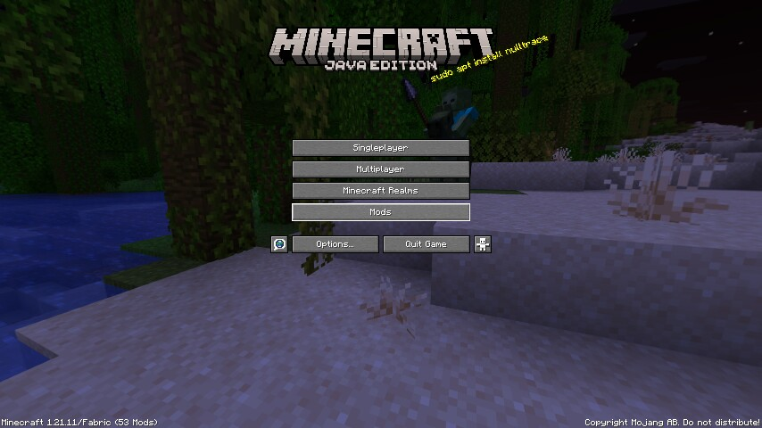
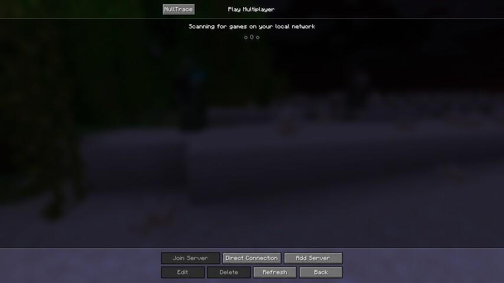
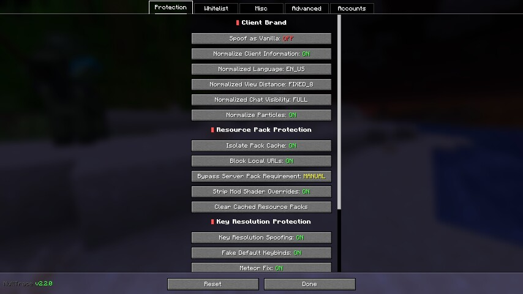
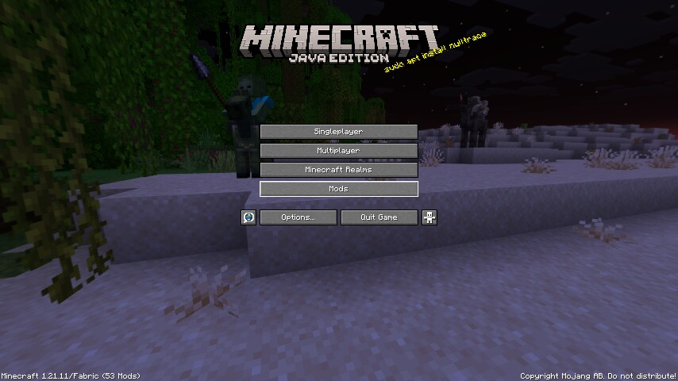
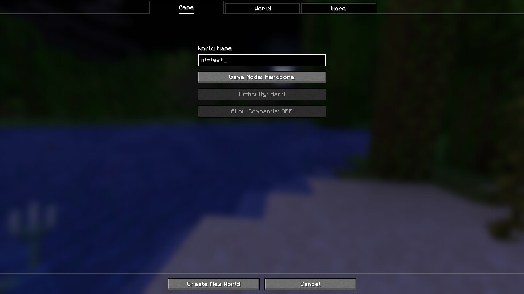
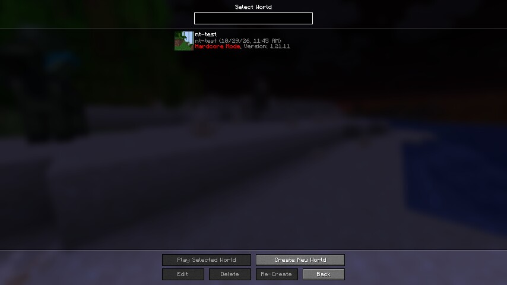
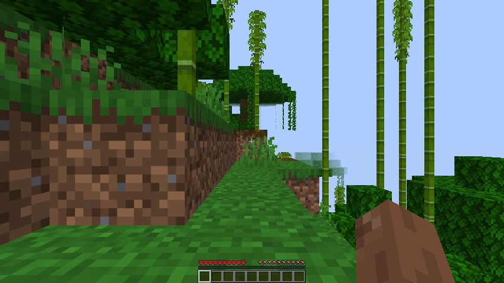
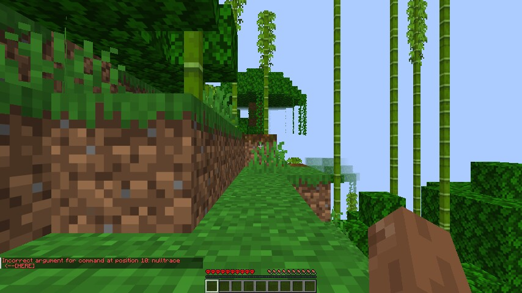
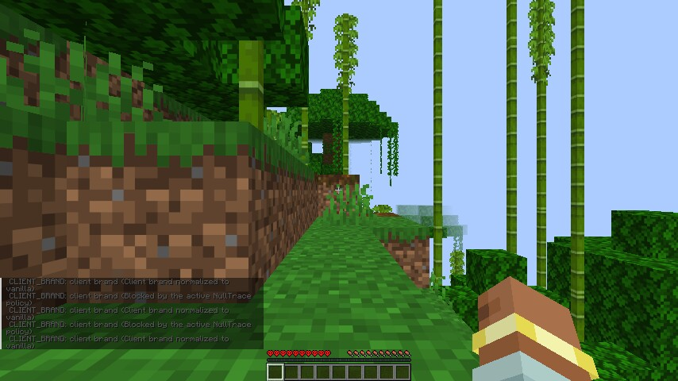

Launch


Title screen — NullTrace 2.2.0 loaded
Minecraft 1.21.11 / Fabric with 53 mods, on software GL (llvmpipe). Bottom-left reads Minecraft 1.21.11/Fabric (53 mods). NullTrace logged NullTrace v2.2.0 — Privacy protection for Minecraft before this frame.


Multiplayer screen — the NullTrace button
The mod's entry point, top-left next to Play Multiplayer.


Configuration — Protection tab
Every protection toggle renders and reflects the persisted config. Five tabs: Protection / Whitelist / Misc / Advanced / Accounts.


Second run — vanilla spoofing enabled
Relaunch after setting spoofAsVanilla = true and debugCommand = true. Log: [NullTrace] Loaded config - spoofAsVanilla: true.
World


World creation
The test world settings. Cycle buttons ignore synthetic clicks in a headless X server, so the world was created with defaults (survival, cheats off).


Select world — nt-test
The world list, with the mod's own red marker line.


In-game
Render distance 2 with Sodium, Lithium and C2ME on llvmpipe. No crash, no mixin failure: Player233 joined the game, Changing view distance to 2.
Commands

/nulltrace — help
The command tree, registered client-side. This frame is the reason the help was rewritten: the audit line is a column off the other two, profile is missing entirely, and info/channels are listed even when Debug Command is off and Brigadier is hiding them from the source. Fixed since this screenshot.
/nulltrace info [mod] - Show tracked mods or details for a specific mod /nulltrace channels - Show all tracked network channels /nulltrace audit - Show the current connection privacy audit

/nulltrace audit — whitelist AUTO, no spoofing
Brand exposed, all 9 mod channels allowed, every non-vanilla translation probe already blocked. The repeated CLIENT_BRAND lines are one entry per evaluation; they are folded into one line with a count since this screenshot.
Server: local:e Profile: STANDARD Client brand: EXPOSED Mod channels: 0 blocked / 9 allowed Known packs: 2 blocked / 0 allowed Translation probes: 8118 blocked / 0 allowed Resource-pack requests: 0 blocked / 0 allowed Local requests: 0 blocked / 0 detected Shader overrides stripped: 0 Remaining exposure: 11 Recorded decisions: 0 blocked, 12 allowed, 0 warnings


/nulltrace audit — Spoof as Vanilla ON
Same world, spoofAsVanilla = true: brand blocked, 9/0 channels, exposure 0. This is the matrix the unit tests pin, observed at runtime.
Server: local:e Profile: STANDARD Client brand: BLOCKED Mod channels: 9 blocked / 0 allowed Known packs: 2 blocked / 0 allowed Translation probes: 8118 blocked / 0 allowed Remaining exposure: 0 Recorded decisions: 6 blocked, 0 allowed, 0 warnings

/nulltrace channels — resolved owners
Every tracked channel attributed to the mod that registered it, with the whitelist verdict. The nine blocked channels are exactly the count in the audit above.
Fabric Screen Handler API (v1) (fabric-screen-handler-api-v1): ✗ fabric-screen-handler-api-v1:open_screen Fabric API (fabric-api): ✗ fabric:extended_block_state_particle_effect_sync ✗ fabric:recipe_sync ✗ fabric:attachment_sync_v1 ✗ fabric:accepted_attachments_v1 ✗ fabric:registry/sync ✗ fabric:custom_ingredient_sync c (c): ✗ c:version ✗ c:register Total: 9 channels ✓ = whitelisted, ✗ = blocked


/nulltrace profile MAXIMUM_PRIVACY — live switch
Switching the per-server profile mid-session. Blocked decisions go 6 → 36 and the entry persists to nulltrace.json under serverProfiles.
[NullTrace] NullTrace server profiles Server: local:e Profile: STANDARD Profile for local:e set to MAXIMUM_PRIVACY [NullTrace] NULLTRACE AUDIT Server: local:e Profile: MAXIMUM_PRIVACY Client brand: BLOCKED Mod channels: 9 blocked / 0 allowed Remaining exposure: 0 Recorded decisions: 36 blocked, 0 allowed, 0 warnings